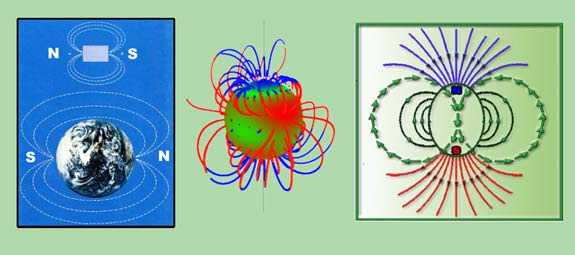
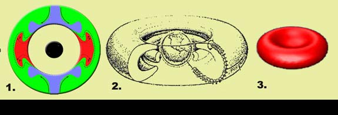

INTRODUCTION TO DIPOLES
What is a Dipole ?
From Wikipedia, The Free encyclopedia (115)
“A dipole is a pair of electric charges or magnetic poles of equal magnitude but opposite polarity (opposite electronic charges), separated by some (usually small) distance. Dipoles can be characterized by their dipole moment, a vector quantity with a magnitude equal to the product of the charge or magnetic strength of one of the poles and the distance separating the two poles. The direction of the dipole moment corresponds to the direction from the negative to the positive charge or from the south to the north pole. (Because of the absence of magnetic monopoles, magnetic dipoles are actually created by current loops or by quantum-mechanical spin.)”
Strictly speaking a dipole contains only two point charges (or magnetic poles), however various arrangements of multiple charges or currents have dipole moments and may be treated as an effective dipole. For the case of magnetic dipoles (where single magnetic monopoles do not exist naturally), the simplest dipole is a single ring of current, which will make a dipole field. Other more complicated systems can be approximated as dipole systems mathematically, especially if the net charge is zero, but the positive and negative charges are not distributed symmetrically and the dipole field structure is the dominant one.”
The last statement highlighted in bold is the most important when considering a paradigm for the brain. To begin understanding a complex system which is a Dipole, a good example is our planet. Obviously it looks nothing like a brain. Primarily because the brain has a much more complicated structure, evolved from creature roots, is sealed within the skull and derives from the incredible complexity of genetics.
Some of this will be discussed in the section “spherical evolution”. Then later the brain will be proposed initially to be a linear quadrapole interacting within a dipole. The correct term might be a linear multipole. Initially for beginning it is a good idea to look into the operation of basic dipoles such as our planet.
4.1 GENERATION OF EARTHS DIPOLE MAGNETISM
From HyperPhysics (116)
“The earth's magnetic field is similar to that of a bar magnet tilted 11 degrees from the spin axis of the earth. The problem with that picture is that the Curie temperature of iron is about 770 C . The earth's core is hotter than that and therefore not magnetic. (paramagnetic) So how did the earth get its magnetic field?
Magnetic fields surround electric currents, so we surmise that circulating electric currents in the Earth's molten metalic core are the origin of the magnetic field. A current loop gives a field similar to that of the earth. The earth's magnetic field is attributed to a dynamo effect of circulating electric current, but it is not constant in direction. Although the details of the dynamo effect are not known in detail, the rotation of the Earth plays a part in generating the currents which are presumed to be the source of the magnetic field. .”
What this tells us is a Dipole field can be generated by movements of different states of iron circulating against each other in hot liquid paramagnetic form.
Sodium itself is capable of a showing us a liquid Dipole state. Recent experiments which try to re-create the earths dynamo generate dipole fields from spherical sodium currents. (117) These are highly unstable.

LEFT : the rectangle represents a simple ferromagnetic iron bar magnet with a North and South pole.. Most of as are familiar with this. The magnet attracts to varying degrees other magnets at their opposite poles. (like poles repel each other) The earth is also a ferromagnetic dipole, with a North and south pole, except that magnetic north on a bar magnet is equal to magnetic south on the earth. MIDDLE : The unstable dipole field from a ball filled with liquid sodium. RIGHT : image shows the basic lines illustrating the magnetic field. These are broadly similar in all dipole systems. The circular feedback round the central axis forms a tube or toroid, while the field lines at the north and south poles have branching structure. As will be shown the brain dipole has these two features of toroids and branching. at many levels. These kinds of shapes exist at all scales and are represented in the structures of many natural complex systems with different ratios of toroid to branching depending on the system itself.
FEATURES OF DIPOLE SYSTEMS
Many aspects of Dipoles are still not fully understood, but they are well observed, and have definite features. I will try to explain these features. Image (1) is an expansion of the wikipedia earth dipole diagram. The earths actual poles are not presented here. North is true magnetic north, that means the direction of the magnetic field is diverging from North and converging to south.
NOTE : In and electric dipole like the brain we replace SOUTH with POSITIVE and NORTH with NEGATIVE

DIPOLE FEATURES
FIELD LINES : These represent the lines of the magnetic field. They run through and extend out from the masses involved in the dipole.
SYMMETRY : Their appearance is mostly symmetrical.
POLES : Poles form at extreme opposite ends of the dipoles mass. In magnetic dipoles they are named North and South. In electric dipoles Positive and Negative.
Poles have the following features.
1. DIVERGENCE / CONVERGENCE
Whether it is the North magnetic pole of a magnet of the negative pole of an electric dipole, the direction of electromagnetic flow diverges out to converge back to the South or positive pole.
2. FIELD REVERSAL
Although poles are similar, their electromagnetic structure is a reverse image of the other.
3. POLAR DOMINANCE The poles have the strongest Electromagnetic force and the lowest amount of electromagnetic wave energy.
MIDLINE PROPERTIES: Due to their symmetry dipoles have a midline, which has its own recognisible features and properties.
TOROIDAL STRUCTUES : These are magnetic field tubes or donuts, that run through and surround the dipole.The toroid is a feature which occurs within many complex systems, but is not always visible.

1. This graphic by geophysicists studying the earths internal system, shows the hot system in the middle balances against the cold plates at the poles. Internally the middle zone has the profile of toroid formation seen also outside the earth in figure 2. In this the Earths ionized atmosphere consists of several toroidal layers. A representation of the inner iron core produces this Classic Donut. 3. Iron embedded in the centre of a Haemoglobin Protein creates the same donut.
NOTE : If you have problems with this tutorial contact me from menus above.
|